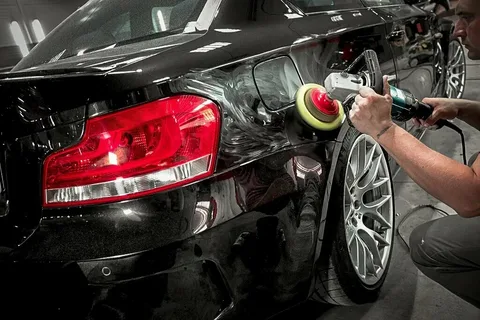

ПОЛИРОВКА АВТОМОБИЛЯ
Профессиональная полировка кузова, фар и дисков с опытом более 10 лет в Бишкеке.

ПОЛИРОВКА КУЗОВА И ФАР
Вернем блеск вашему автомобилю и защитим его от царапин, потертостей и загрязнений.
Подробнее →Полировка автомобиля:
Полировка автомобиля — это не просто улучшение внешнего вида. Это возможность защитить кузов от внешних факторов, таких как царапины, потертости и загрязнения. Используем только профессиональные средства, чтобы вернуть вашему автомобилю не только блеск, но и долговечность.
Мы предлагаем услуги полировки кузова, фар, колесных дисков и стекол. Каждая работа выполняется с максимальной тщательностью, чтобы ваш автомобиль выглядел как новый.


Наши услуги



Этапы работы: Полировка автомобиля

Этап 1: Подготовка автомобиля
Мойка и тщательная очистка кузова от грязи, пыли и старых слоев воска. Подготавливаем поверхность для качественной полировки.

Этап 2: Обработка поверхности
Наносим специальные препараты для удаления мелких дефектов и улучшения сцепления полировочной пасты с лакокрасочным покрытием.

Этап 3: Полировка кузова
Аккуратная и профессиональная полировка кузова, фар и дисков для восстановления блеска и идеальной поверхности.

Этап 4: Финальная проверка
Проверяем результат, устраняем мелкие недочеты и обеспечиваем защитный слой для длительного эффекта полировки.
Продолжительность работы
Время выполнения полировки автомобиля обычно занимает от 2 до 4 часов в зависимости от состояния кузова, фар и колесных дисков.
💰 Стоимость услуги
Стоимость полировки кузова начинается от
5 000 сом.
Стоимость может изменяться в зависимости от типа автомобиля и состояния кузова.
Полная полировка с восстановлением фар и колесных дисков: от
10 000 сом.
Свяжитесь с нами для точной оценки.
Примеры наших работ


Отзывы наших клиентов
«Результат превзошел ожидания! Машина сияет как новая, полировка просто фантастическая!»
«Спасибо за качественную полировку! Моя машина выглядит великолепно!»
«Полировка кузова и фар выполнена на высшем уровне, машина выглядит как новая!»